Loot in base game settlements
Playing
How much loot to expect in the settlements CBF builds for the base game (modern settlements for industrial, spacer and ultra factions). The values are market value in silver, with quality and condition included. Weapons and apparel worn by pawns, furniture and buildings are not counted.
These are simulated values: each settlement type was laid out 8 times and its containers were filled 200 times. Settlements in your game are often a little larger than in the simulation, so expect somewhat more. The value per container is the more reliable figure. The numbers change when loot tables are updated.
See also: Loot for how loot tables and containers work.
Settlements
| Settlement |
Expected value |
Per container |
| Modern village |
19,744 |
318 |
| Modern town |
64,938 |
334 |
| Large town |
73,750 |
301 |
| Metropolis |
102,505 |
436 |
Modern village
- Tech level: Industrial, Spacer, Ultra
- Expected loot value: 19,744 silver on average, usually 13,239 to 28,086
- Containers: about 62, worth 318 silver each on average
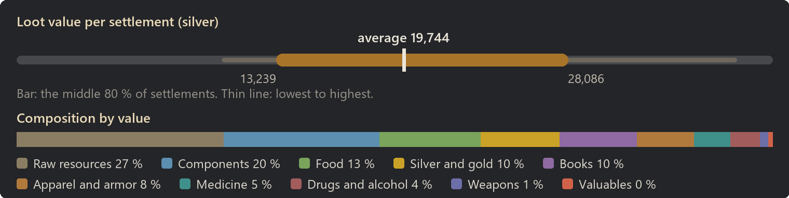
Raw resources: 27 % of the value
| Item | Share of this class | Found in | Average amount |
|---|
| Wood | 46 % | almost always | 2,059 |
| Steel | 11 % | 98 % | 321 |
| Cloth | 7 % | 97 % | 262 |
| Plainleather | 5 % | 91 % | 127 |
| Jade | 4 % | 85 % | 42 |
| Sheep wool | 3 % | 80 % | 68 |
| Muffalo wool | 3 % | 78 % | 59 |
| Alpaca wool | 3 % | 72 % | 41 |
Components: 20 % of the value
| Item | Share of this class | Found in | Average amount |
|---|
| Component | 20 % | 96 % | 26 |
| Powerfocus chip | 19 % | 30 % | 1 |
| Nano structuring chip | 18 % | 28 % | 0 |
| Signal chip | 11 % | 34 % | 1 |
| Chemfuel | 10 % | 94 % | 168 |
| Advanced component | 9 % | 44 % | 2 |
| Neutroamine | 5 % | 70 % | 35 |
| Basic subcore | 5 % | 38 % | 1 |
Food: 13 % of the value
| Item | Share of this class | Found in | Average amount |
|---|
| Berries | 17 % | almost always | 365 |
| Potatoes | 15 % | almost always | 367 |
| Rice | 13 % | almost always | 303 |
| Corn | 11 % | almost always | 273 |
| Pemmican | 6 % | almost always | 121 |
| Kibble | 5 % | 90 % | 118 |
| Raw fungus | 4 % | 89 % | 88 |
| Simple meal | 4 % | almost always | 6 |
Silver and gold: 10 % of the value
| Item | Share of this class | Found in | Average amount |
|---|
| Silver | 57 % | almost always | 1,170 |
| Gold | 43 % | 96 % | 89 |
Books: 10 % of the value
| Item | Share of this class | Found in | Average amount |
|---|
| Textbook | 33 % | 91 % | 4 |
| Schematic | 25 % | 84 % | 3 |
| Novel | 21 % | 80 % | 3 |
| Map | 13 % | 60 % | 1 |
| Tome | 8 % | 34 % | 1 |
Apparel and armor: 8 % of the value
| Item | Share of this class | Found in | Average amount |
|---|
| Duster | 20 % | 94 % | 4 |
| Pants | 18 % | almost always | 9 |
| T-shirt | 18 % | 99 % | 9 |
| Jacket | 16 % | 94 % | 4 |
| Parka | 7 % | 78 % | 2 |
| Robe | 6 % | 73 % | 1 |
| Corset | 5 % | 42 % | 1 |
| Cowboy hat | 4 % | 86 % | 3 |
Medicine: 5 % of the value
| Item | Share of this class | Found in | Average amount |
|---|
| Medicine | 53 % | 94 % | 28 |
| Herbal medicine | 38 % | 93 % | 36 |
| Glitterworld medicine | 9 % | 49 % | 2 |
Drugs and alcohol: 4 % of the value
| Item | Share of this class | Found in | Average amount |
|---|
| Beer | 44 % | 93 % | 29 |
| Penoxycyline | 26 % | 77 % | 11 |
| Metalblood serum | 13 % | 20 % | 1 |
| Mind-numb serum | 7 % | 31 % | 1 |
| Ambrosia | 4 % | 44 % | 2 |
| Wake-up | 1 % | 7 % | 0 |
| Ghoul resurrection serum | 1 % | 12 % | 0 |
| Flake | 1 % | 10 % | 1 |
Weapons: 1 % of the value
| Item | Share of this class | Found in | Average amount |
|---|
| Revolver | 26 % | 58 % | 1 |
| Autopistol | 22 % | 50 % | 1 |
| Machine pistol | 15 % | 28 % | 0 |
| 81mm mortar shell (HE) | 14 % | 6 % | 1 |
| Heavy SMG | 7 % | 14 % | 0 |
| 81mm mortar shell (Incendiary) | 4 % | 3 % | 0 |
| Club | 2 % | 6 % | 0 |
| Spear | 2 % | 2 % | 0 |
| Most valuable possible find |
Value |
Chance per settlement |
| Persona core |
4,000 |
under 1 % |
| Marine armor |
2,036 |
1 % |
| Nano structuring chip |
1,500 |
28 % |
| Gravcore |
1,250 |
2 % |
| Powerfocus chip |
1,000 |
30 % |
Modern town
- Tech level: Industrial, Spacer, Ultra
- Expected loot value: 64,938 silver on average, usually 49,888 to 82,370
- Containers: about 194, worth 334 silver each on average
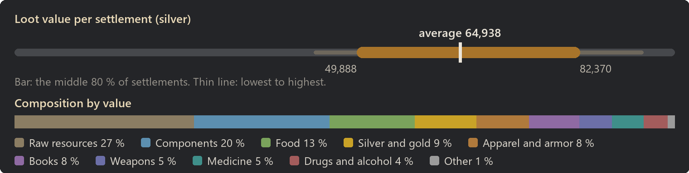
Raw resources: 27 % of the value
| Item | Share of this class | Found in | Average amount |
|---|
| Wood | 41 % | almost always | 6,031 |
| Steel | 14 % | almost always | 1,332 |
| Cloth | 8 % | almost always | 879 |
| Plainleather | 5 % | almost always | 428 |
| Jade | 4 % | almost always | 132 |
| Sheep wool | 4 % | 99 % | 234 |
| Muffalo wool | 3 % | almost always | 209 |
| Alpaca wool | 3 % | almost always | 136 |
Components: 20 % of the value
| Item | Share of this class | Found in | Average amount |
|---|
| Component | 23 % | almost always | 94 |
| Powerfocus chip | 22 % | 74 % | 3 |
| Nano structuring chip | 14 % | 58 % | 1 |
| Signal chip | 13 % | 80 % | 3 |
| Advanced component | 8 % | 84 % | 5 |
| Chemfuel | 7 % | almost always | 425 |
| Basic subcore | 6 % | 82 % | 4 |
| Neutroamine | 4 % | 97 % | 91 |
Food: 13 % of the value
| Item | Share of this class | Found in | Average amount |
|---|
| Berries | 17 % | almost always | 1,192 |
| Potatoes | 14 % | almost always | 1,100 |
| Rice | 13 % | almost always | 988 |
| Corn | 10 % | almost always | 801 |
| Pemmican | 6 % | almost always | 344 |
| Kibble | 5 % | almost always | 387 |
| Chicken egg (unfert.) | 4 % | 96 % | 46 |
| Simple meal | 4 % | almost always | 21 |
Silver and gold: 9 % of the value
| Item | Share of this class | Found in | Average amount |
|---|
| Silver | 60 % | almost always | 3,610 |
| Gold | 40 % | almost always | 246 |
Apparel and armor: 8 % of the value
| Item | Share of this class | Found in | Average amount |
|---|
| Pants | 15 % | almost always | 25 |
| Duster | 15 % | almost always | 11 |
| Jacket | 14 % | almost always | 12 |
| T-shirt | 14 % | almost always | 24 |
| Parka | 6 % | almost always | 4 |
| Recon armor | 5 % | 23 % | 0 |
| Flak vest | 5 % | 80 % | 2 |
| Robe | 4 % | 96 % | 3 |
Books: 8 % of the value
| Item | Share of this class | Found in | Average amount |
|---|
| Textbook | 31 % | almost always | 10 |
| Schematic | 24 % | almost always | 8 |
| Novel | 21 % | 98 % | 7 |
| Map | 15 % | 91 % | 4 |
| Tome | 9 % | 68 % | 2 |
Weapons: 5 % of the value
| Item | Share of this class | Found in | Average amount |
|---|
| 81mm mortar shell (HE) | 27 % | 86 % | 16 |
| 81mm mortar shell (Incendiary) | 11 % | 70 % | 8 |
| Bolt-action rifle | 9 % | 84 % | 2 |
| Pump shotgun | 6 % | 78 % | 2 |
| Assault rifle | 6 % | 66 % | 1 |
| Revolver | 5 % | 98 % | 3 |
| Autopistol | 5 % | 91 % | 2 |
| Sniper rifle | 4 % | 42 % | 0 |
Medicine: 5 % of the value
| Item | Share of this class | Found in | Average amount |
|---|
| Medicine | 53 % | almost always | 91 |
| Herbal medicine | 38 % | almost always | 119 |
| Glitterworld medicine | 9 % | 84 % | 5 |
Drugs and alcohol: 4 % of the value
| Item | Share of this class | Found in | Average amount |
|---|
| Beer | 35 % | almost always | 67 |
| Penoxycyline | 27 % | almost always | 35 |
| Metalblood serum | 20 % | 64 % | 2 |
| Mind-numb serum | 6 % | 60 % | 2 |
| Ambrosia | 3 % | 74 % | 5 |
| Wake-up | 2 % | 27 % | 1 |
| Flake | 1 % | 32 % | 2 |
| Yayo | 1 % | 25 % | 1 |
Other: 1 % of the value
| Item | Share of this class | Found in | Average amount |
|---|
| Reinforced barrel | 85 % | 36 % | 1 |
| Pendant | 8 % | 6 % | 0 |
| Chalice | 5 % | 4 % | 0 |
| Genepack | 2 % | 6 % | 0 |
| Toxic wastepack | 0 % | 70 % | 5 |
| Most valuable possible find |
Value |
Chance per settlement |
| Persona core |
4,000 |
1 % |
| Marine armor |
2,036 |
8 % |
| Recon armor |
1,542 |
23 % |
| Nano structuring chip |
1,500 |
58 % |
| Charge rifle |
1,012 |
14 % |
Large town
- Tech level: Industrial, Spacer, Ultra
- Expected loot value: 73,750 silver on average, usually 61,968 to 86,730
- Containers: about 245, worth 301 silver each on average
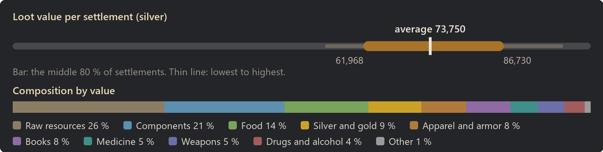
Raw resources: 26 % of the value
| Item | Share of this class | Found in | Average amount |
|---|
| Wood | 41 % | almost always | 6,637 |
| Steel | 14 % | almost always | 1,446 |
| Cloth | 8 % | almost always | 974 |
| Plainleather | 5 % | almost always | 453 |
| Jade | 4 % | almost always | 153 |
| Sheep wool | 4 % | almost always | 270 |
| Muffalo wool | 3 % | almost always | 226 |
| Alpaca wool | 3 % | almost always | 148 |
Components: 21 % of the value
| Item | Share of this class | Found in | Average amount |
|---|
| Component | 22 % | almost always | 103 |
| Powerfocus chip | 17 % | 72 % | 3 |
| Chemfuel | 14 % | almost always | 901 |
| Nano structuring chip | 13 % | 62 % | 1 |
| Signal chip | 13 % | 84 % | 4 |
| Advanced component | 8 % | 79 % | 6 |
| Neutroamine | 7 % | almost always | 176 |
| Basic subcore | 6 % | 87 % | 4 |
Food: 14 % of the value
| Item | Share of this class | Found in | Average amount |
|---|
| Berries | 16 % | almost always | 1,387 |
| Potatoes | 13 % | almost always | 1,287 |
| Rice | 12 % | almost always | 1,156 |
| Corn | 10 % | almost always | 943 |
| Pemmican | 8 % | almost always | 652 |
| Kibble | 7 % | almost always | 704 |
| Chicken egg (unfert.) | 4 % | 98 % | 68 |
| Raw fungus | 4 % | almost always | 350 |
Silver and gold: 9 % of the value
| Item | Share of this class | Found in | Average amount |
|---|
| Silver | 59 % | almost always | 3,934 |
| Gold | 41 % | almost always | 276 |
Apparel and armor: 8 % of the value
| Item | Share of this class | Found in | Average amount |
|---|
| Pants | 15 % | almost always | 28 |
| T-shirt | 15 % | almost always | 28 |
| Duster | 15 % | almost always | 12 |
| Jacket | 14 % | almost always | 13 |
| Parka | 6 % | 98 % | 5 |
| Robe | 5 % | 98 % | 4 |
| Corset | 4 % | 82 % | 2 |
| Recon armor | 4 % | 21 % | 0 |
Books: 8 % of the value
| Item | Share of this class | Found in | Average amount |
|---|
| Textbook | 30 % | almost always | 10 |
| Schematic | 25 % | almost always | 9 |
| Novel | 21 % | 98 % | 8 |
| Map | 14 % | 93 % | 5 |
| Tome | 9 % | 80 % | 2 |
Medicine: 5 % of the value
| Item | Share of this class | Found in | Average amount |
|---|
| Medicine | 52 % | almost always | 100 |
| Herbal medicine | 38 % | almost always | 130 |
| Glitterworld medicine | 10 % | 86 % | 7 |
Weapons: 5 % of the value
| Item | Share of this class | Found in | Average amount |
|---|
| 81mm mortar shell (HE) | 27 % | 88 % | 16 |
| 81mm mortar shell (Incendiary) | 12 % | 76 % | 9 |
| Bolt-action rifle | 9 % | 88 % | 3 |
| Assault rifle | 7 % | 72 % | 1 |
| Pump shotgun | 7 % | 78 % | 2 |
| Revolver | 6 % | 97 % | 3 |
| Autopistol | 4 % | 92 % | 2 |
| Sniper rifle | 4 % | 38 % | 1 |
Drugs and alcohol: 4 % of the value
| Item | Share of this class | Found in | Average amount |
|---|
| Beer | 36 % | almost always | 78 |
| Penoxycyline | 28 % | almost always | 40 |
| Metalblood serum | 16 % | 68 % | 2 |
| Mind-numb serum | 7 % | 66 % | 2 |
| Ambrosia | 3 % | 75 % | 5 |
| Wake-up | 2 % | 32 % | 2 |
| Flake | 2 % | 44 % | 3 |
| Yayo | 2 % | 36 % | 2 |
| Most valuable possible find |
Value |
Chance per settlement |
| Persona core |
4,000 |
4 % |
| Marine armor |
2,036 |
8 % |
| Recon armor |
1,542 |
21 % |
| Nano structuring chip |
1,500 |
62 % |
| Gravcore |
1,250 |
2 % |
Metropolis
- Tech level: Industrial, Spacer, Ultra
- Expected loot value: 102,505 silver on average, usually 79,237 to 122,531
- Containers: about 235, worth 436 silver each on average
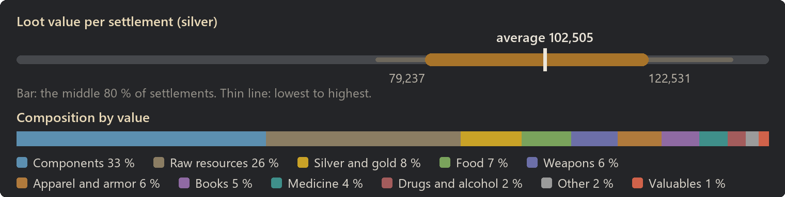
Components: 33 % of the value
| Item | Share of this class | Found in | Average amount |
|---|
| Component | 22 % | almost always | 237 |
| Powerfocus chip | 21 % | 98 % | 7 |
| Nano structuring chip | 16 % | 95 % | 4 |
| Signal chip | 14 % | 98 % | 9 |
| Advanced component | 8 % | 99 % | 14 |
| Chemfuel | 7 % | almost always | 1,048 |
| Basic subcore | 6 % | 98 % | 9 |
| Neutroamine | 4 % | almost always | 209 |
Raw resources: 26 % of the value
| Item | Share of this class | Found in | Average amount |
|---|
| Wood | 33 % | almost always | 7,337 |
| Steel | 23 % | almost always | 3,266 |
| Cloth | 6 % | almost always | 1,102 |
| Jade | 5 % | almost always | 261 |
| Plainleather | 4 % | almost always | 494 |
| Plasteel | 4 % | 99 % | 103 |
| Sheep wool | 3 % | almost always | 310 |
| Muffalo wool | 3 % | almost always | 268 |
Silver and gold: 8 % of the value
| Item | Share of this class | Found in | Average amount |
|---|
| Silver | 52 % | almost always | 4,368 |
| Gold | 48 % | almost always | 397 |
Food: 7 % of the value
| Item | Share of this class | Found in | Average amount |
|---|
| Berries | 15 % | almost always | 861 |
| Potatoes | 12 % | almost always | 763 |
| Rice | 11 % | almost always | 694 |
| Corn | 9 % | almost always | 574 |
| Pemmican | 8 % | almost always | 362 |
| Kibble | 6 % | almost always | 396 |
| Simple meal | 4 % | almost always | 20 |
| Chicken egg (unfert.) | 4 % | 98 % | 40 |
Weapons: 6 % of the value
| Item | Share of this class | Found in | Average amount |
|---|
| 81mm mortar shell (HE) | 27 % | 96 % | 31 |
| 81mm mortar shell (Incendiary) | 12 % | 94 % | 17 |
| Bolt-action rifle | 11 % | 99 % | 6 |
| Assault rifle | 9 % | 94 % | 2 |
| Pump shotgun | 8 % | 94 % | 5 |
| Sniper rifle | 5 % | 69 % | 1 |
| Charge rifle | 4 % | 34 % | 0 |
| Chain shotgun | 4 % | 76 % | 1 |
Apparel and armor: 6 % of the value
| Item | Share of this class | Found in | Average amount |
|---|
| Pants | 10 % | almost always | 20 |
| T-shirt | 10 % | almost always | 20 |
| Jacket | 10 % | almost always | 10 |
| Flak vest | 10 % | 98 % | 6 |
| Recon armor | 9 % | 42 % | 1 |
| Duster | 9 % | almost always | 8 |
| Flak pants | 8 % | 94 % | 5 |
| Flak jacket | 5 % | 87 % | 2 |
Books: 5 % of the value
| Item | Share of this class | Found in | Average amount |
|---|
| Textbook | 30 % | 99 % | 10 |
| Schematic | 25 % | almost always | 8 |
| Novel | 21 % | 98 % | 7 |
| Map | 16 % | 92 % | 5 |
| Tome | 8 % | 70 % | 2 |
Medicine: 4 % of the value
| Item | Share of this class | Found in | Average amount |
|---|
| Medicine | 53 % | almost always | 114 |
| Herbal medicine | 37 % | almost always | 146 |
| Glitterworld medicine | 10 % | 96 % | 8 |
Drugs and alcohol: 2 % of the value
| Item | Share of this class | Found in | Average amount |
|---|
| Penoxycyline | 33 % | almost always | 44 |
| Metalblood serum | 21 % | 67 % | 3 |
| Beer | 19 % | almost always | 38 |
| Mind-numb serum | 8 % | 69 % | 2 |
| Wake-up | 4 % | 50 % | 3 |
| Yayo | 3 % | 54 % | 4 |
| Flake | 3 % | 62 % | 5 |
| Go-juice | 2 % | 27 % | 1 |
Other: 2 % of the value
| Item | Share of this class | Found in | Average amount |
|---|
| Reinforced barrel | 66 % | 63 % | 2 |
| Chalice | 16 % | 32 % | 1 |
| Pendant | 13 % | 25 % | 0 |
| Genepack | 5 % | 40 % | 1 |
| Granite chunk | 0 % | 12 % | 0 |
| Toxic wastepack | 0 % | 94 % | 15 |
Valuables: 1 % of the value
| Item | Share of this class | Found in | Average amount |
|---|
| Persona core | 36 % | 10 % | 0 |
| Psychic animal pulser | 30 % | 29 % | 1 |
| Psychic soothe pulser | 24 % | 30 % | 1 |
| Techprof subpersona core | 9 % | 12 % | 0 |
| Luciferium | 1 % | 14 % | 0 |
| Most valuable possible find |
Value |
Chance per settlement |
| Persona core |
4,000 |
10 % |
| Marine armor |
2,036 |
22 % |
| Recon armor |
1,542 |
42 % |
| Nano structuring chip |
1,500 |
95 % |
| Gravcore |
1,250 |
7 % |
Camps
| Camp |
Expected value |
Per container |
| Outpost |
3,335 |
785 |
| Farming site |
4,182 |
216 |
| Hunting site |
7,952 |
442 |
| Bandit camp |
8,081 |
572 |
| Logging site |
9,476 |
446 |
| Mining site |
9,807 |
438 |
Outpost
- Tech level: Industrial, Spacer, Ultra
- Expected loot value: 3,335 silver on average, usually 1,486 to 5,836
- Containers: about 4, worth 785 silver each on average
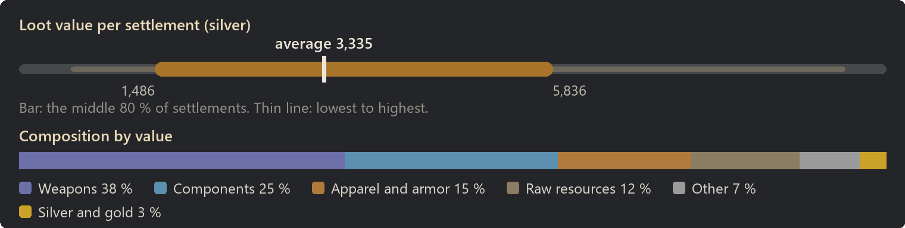
Weapons: 38 % of the value
| Item | Share of this class | Found in | Average amount |
|---|
| 81mm mortar shell (HE) | 32 % | 58 % | 7 |
| 81mm mortar shell (Incendiary) | 16 % | 47 % | 4 |
| Bolt-action rifle | 9 % | 48 % | 1 |
| Pump shotgun | 8 % | 49 % | 1 |
| Assault rifle | 7 % | 30 % | 0 |
| Sniper rifle | 4 % | 20 % | 0 |
| Charge rifle | 4 % | 6 % | 0 |
| Chain shotgun | 4 % | 22 % | 0 |
Components: 25 % of the value
| Item | Share of this class | Found in | Average amount |
|---|
| Powerfocus chip | 30 % | 12 % | 0 |
| Component | 23 % | 48 % | 6 |
| Nano structuring chip | 21 % | 7 % | 0 |
| Signal chip | 14 % | 12 % | 0 |
| Advanced component | 7 % | 12 % | 0 |
| Basic subcore | 5 % | 10 % | 0 |
Apparel and armor: 15 % of the value
| Item | Share of this class | Found in | Average amount |
|---|
| Flak vest | 22 % | 52 % | 1 |
| Recon armor | 21 % | 11 % | 0 |
| Flak pants | 16 % | 39 % | 1 |
| Flak jacket | 11 % | 30 % | 0 |
| Simple helmet | 9 % | 55 % | 1 |
| Flak helmet | 8 % | 27 % | 0 |
| Recon helmet | 6 % | 9 % | 0 |
| Marine armor | 6 % | 4 % | 0 |
Raw resources: 12 % of the value
| Item | Share of this class | Found in | Average amount |
|---|
| Steel | 64 % | 72 % | 140 |
| Jade | 6 % | 19 % | 5 |
| Cloth | 5 % | 17 % | 14 |
| Plainleather | 5 % | 16 % | 10 |
| Plasteel | 5 % | 10 % | 2 |
| Lightleather | 3 % | 14 % | 6 |
| Sheep wool | 2 % | 7 % | 3 |
| Alpaca wool | 2 % | 7 % | 2 |
Other: 7 % of the value
| Item | Share of this class | Found in | Average amount |
|---|
| Reinforced barrel | 100 % | 16 % | 0 |
Silver and gold: 3 % of the value
| Item | Share of this class | Found in | Average amount |
|---|
| Silver | 54 % | 40 % | 54 |
| Gold | 46 % | 16 % | 5 |
| Most valuable possible find |
Value |
Chance per settlement |
| Marine armor |
2,036 |
4 % |
| Recon armor |
1,542 |
11 % |
| Nano structuring chip |
1,500 |
7 % |
| Charge rifle |
1,012 |
6 % |
| Powerfocus chip |
1,000 |
12 % |
Farming site
- Tech level: Industrial, Spacer, Ultra
- Expected loot value: 4,182 silver on average, usually 3,346 to 4,965
- Containers: about 19, worth 216 silver each on average
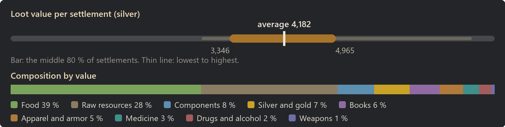
Food: 39 % of the value
| Item | Share of this class | Found in | Average amount |
|---|
| Berries | 14 % | almost always | 194 |
| Potatoes | 12 % | 98 % | 176 |
| Rice | 11 % | 94 % | 161 |
| Chicken egg (unfert.) | 10 % | 88 % | 23 |
| Corn | 9 % | 96 % | 136 |
| Kibble | 9 % | 92 % | 131 |
| Pemmican | 7 % | 98 % | 81 |
| Milk | 6 % | 87 % | 54 |
Raw resources: 28 % of the value
| Item | Share of this class | Found in | Average amount |
|---|
| Wood | 51 % | 98 % | 506 |
| Cloth | 9 % | 61 % | 70 |
| Plainleather | 5 % | 47 % | 30 |
| Steel | 5 % | 27 % | 33 |
| Sheep wool | 5 % | 42 % | 20 |
| Muffalo wool | 4 % | 34 % | 17 |
| Lightleather | 3 % | 41 % | 20 |
| Heavy fur | 3 % | 31 % | 11 |
Components: 8 % of the value
| Item | Share of this class | Found in | Average amount |
|---|
| Nano structuring chip | 19 % | 3 % | 0 |
| Component | 18 % | 20 % | 2 |
| Signal chip | 16 % | 5 % | 0 |
| Advanced component | 12 % | 6 % | 0 |
| Chemfuel | 11 % | 20 % | 16 |
| Powerfocus chip | 8 % | 1 % | 0 |
| Basic subcore | 7 % | 6 % | 0 |
| Neutroamine | 6 % | 14 % | 3 |
Silver and gold: 7 % of the value
| Item | Share of this class | Found in | Average amount |
|---|
| Silver | 65 % | 80 % | 198 |
| Gold | 35 % | 36 % | 11 |
Books: 6 % of the value
| Item | Share of this class | Found in | Average amount |
|---|
| Textbook | 35 % | 28 % | 1 |
| Schematic | 21 % | 22 % | 0 |
| Novel | 18 % | 14 % | 0 |
| Map | 14 % | 10 % | 0 |
| Tome | 12 % | 10 % | 0 |
Apparel and armor: 5 % of the value
| Item | Share of this class | Found in | Average amount |
|---|
| T-shirt | 20 % | 55 % | 1 |
| Jacket | 19 % | 40 % | 1 |
| Pants | 18 % | 55 % | 1 |
| Duster | 18 % | 36 % | 1 |
| Robe | 6 % | 17 % | 0 |
| Parka | 6 % | 18 % | 0 |
| Corset | 5 % | 7 % | 0 |
| Cowboy hat | 4 % | 30 % | 0 |
Medicine: 3 % of the value
| Item | Share of this class | Found in | Average amount |
|---|
| Medicine | 49 % | 34 % | 4 |
| Herbal medicine | 38 % | 34 % | 5 |
| Glitterworld medicine | 13 % | 11 % | 0 |
Drugs and alcohol: 2 % of the value
| Item | Share of this class | Found in | Average amount |
|---|
| Beer | 47 % | 36 % | 4 |
| Penoxycyline | 28 % | 20 % | 2 |
| Mind-numb serum | 14 % | 8 % | 0 |
| Metalblood serum | 6 % | 2 % | 0 |
| Ambrosia | 3 % | 6 % | 0 |
| Ghoul resurrection serum | 2 % | 2 % | 0 |
| Most valuable possible find |
Value |
Chance per settlement |
| Nano structuring chip |
1,500 |
3 % |
| Powerfocus chip |
1,000 |
1 % |
| Signal chip |
500 |
5 % |
| Heavy SMG |
357 |
2 % |
| Tome |
250 |
10 % |
Hunting site
- Tech level: Industrial, Spacer, Ultra
- Expected loot value: 7,952 silver on average, usually 5,772 to 10,351
- Containers: about 18, worth 442 silver each on average
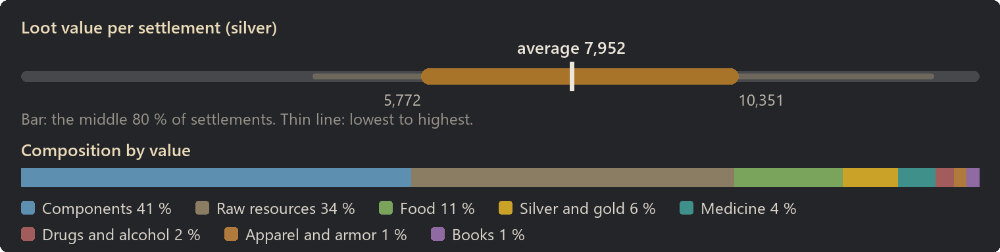
Components: 41 % of the value
| Item | Share of this class | Found in | Average amount |
|---|
| Powerfocus chip | 22 % | 30 % | 1 |
| Component | 21 % | 90 % | 21 |
| Nano structuring chip | 17 % | 22 % | 0 |
| Signal chip | 12 % | 36 % | 1 |
| Chemfuel | 10 % | 90 % | 136 |
| Advanced component | 9 % | 39 % | 1 |
| Basic subcore | 6 % | 38 % | 1 |
| Neutroamine | 5 % | 64 % | 25 |
Raw resources: 34 % of the value
| Item | Share of this class | Found in | Average amount |
|---|
| Wood | 37 % | almost always | 825 |
| Steel | 22 % | 96 % | 310 |
| Cloth | 6 % | 77 % | 107 |
| Plainleather | 3 % | 54 % | 42 |
| Jade | 3 % | 55 % | 17 |
| Plasteel | 3 % | 34 % | 10 |
| Sheep wool | 3 % | 52 % | 27 |
| Muffalo wool | 2 % | 43 % | 24 |
Food: 11 % of the value
| Item | Share of this class | Found in | Average amount |
|---|
| Berries | 12 % | 90 % | 90 |
| Rice | 10 % | 79 % | 82 |
| Potatoes | 10 % | 78 % | 80 |
| Pemmican | 9 % | 96 % | 60 |
| Kibble | 9 % | 78 % | 76 |
| Corn | 7 % | 72 % | 58 |
| Chicken egg (unfert.) | 7 % | 50 % | 9 |
| Milk | 6 % | 67 % | 30 |
Silver and gold: 6 % of the value
| Item | Share of this class | Found in | Average amount |
|---|
| Gold | 50 % | 58 % | 23 |
| Silver | 50 % | 93 % | 230 |
Medicine: 4 % of the value
| Item | Share of this class | Found in | Average amount |
|---|
| Medicine | 51 % | 63 % | 9 |
| Herbal medicine | 35 % | 57 % | 11 |
| Glitterworld medicine | 14 % | 22 % | 1 |
Drugs and alcohol: 2 % of the value
| Item | Share of this class | Found in | Average amount |
|---|
| Penoxycyline | 40 % | 34 % | 3 |
| Metalblood serum | 32 % | 14 % | 0 |
| Beer | 14 % | 19 % | 2 |
| Mind-numb serum | 11 % | 10 % | 0 |
| Ghoul resurrection serum | 2 % | 4 % | 0 |
| Ambrosia | 1 % | 4 % | 0 |
Apparel and armor: 1 % of the value
| Item | Share of this class | Found in | Average amount |
|---|
| Jacket | 28 % | 28 % | 0 |
| T-shirt | 16 % | 30 % | 1 |
| Pants | 16 % | 29 % | 1 |
| Duster | 14 % | 16 % | 0 |
| Robe | 8 % | 12 % | 0 |
| Parka | 6 % | 8 % | 0 |
| Cowboy hat | 5 % | 16 % | 0 |
| Corset | 3 % | 2 % | 0 |
Books: 1 % of the value
| Item | Share of this class | Found in | Average amount |
|---|
| Textbook | 31 % | 12 % | 0 |
| Schematic | 28 % | 12 % | 0 |
| Novel | 25 % | 8 % | 0 |
| Map | 14 % | 4 % | 0 |
| Tome | 2 % | 1 % | 0 |
| Most valuable possible find |
Value |
Chance per settlement |
| Nano structuring chip |
1,500 |
22 % |
| Powerfocus chip |
1,000 |
30 % |
| Signal chip |
500 |
36 % |
| Advanced component |
200 |
39 % |
| Metalblood serum |
200 |
14 % |
Bandit camp
- Tech level: Industrial, Spacer, Ultra
- Expected loot value: 8,081 silver on average, usually 5,765 to 10,745
- Containers: about 14, worth 572 silver each on average
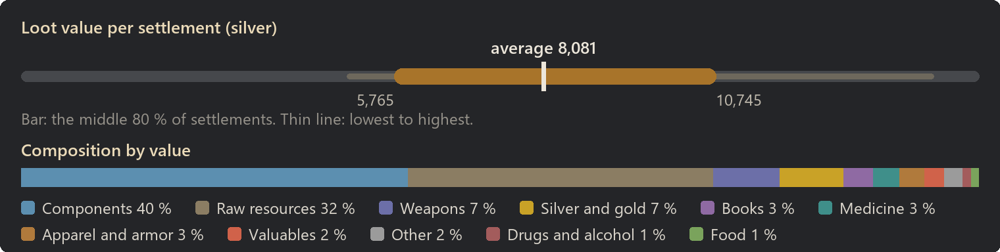
Components: 40 % of the value
| Item | Share of this class | Found in | Average amount |
|---|
| Component | 23 % | 92 % | 24 |
| Powerfocus chip | 19 % | 30 % | 1 |
| Signal chip | 14 % | 38 % | 1 |
| Nano structuring chip | 13 % | 20 % | 0 |
| Advanced component | 8 % | 36 % | 1 |
| Chemfuel | 8 % | 78 % | 114 |
| Basic subcore | 7 % | 42 % | 1 |
| Neutroamine | 4 % | 62 % | 23 |
Raw resources: 32 % of the value
| Item | Share of this class | Found in | Average amount |
|---|
| Steel | 30 % | almost always | 407 |
| Wood | 30 % | almost always | 636 |
| Plasteel | 5 % | 47 % | 14 |
| Jade | 4 % | 56 % | 22 |
| Cloth | 4 % | almost always | 64 |
| Plainleather | 3 % | 56 % | 39 |
| Alpaca wool | 2 % | 32 % | 14 |
| Sheep wool | 2 % | 42 % | 20 |
Weapons: 7 % of the value
| Item | Share of this class | Found in | Average amount |
|---|
| 81mm mortar shell (HE) | 36 % | 36 % | 4 |
| 81mm mortar shell (Incendiary) | 17 % | 28 % | 2 |
| Bolt-action rifle | 9 % | 30 % | 0 |
| Sniper rifle | 7 % | 14 % | 0 |
| Assault rifle | 6 % | 18 % | 0 |
| Pump shotgun | 6 % | 19 % | 0 |
| Spear | 2 % | 10 % | 0 |
| Chain shotgun | 2 % | 7 % | 0 |
Silver and gold: 7 % of the value
| Item | Share of this class | Found in | Average amount |
|---|
| Gold | 55 % | 66 % | 30 |
| Silver | 45 % | 92 % | 247 |
Books: 3 % of the value
| Item | Share of this class | Found in | Average amount |
|---|
| Textbook | 30 % | 24 % | 0 |
| Schematic | 30 % | 26 % | 1 |
| Novel | 20 % | 16 % | 0 |
| Map | 18 % | 12 % | 0 |
| Tome | 4 % | 2 % | 0 |
Medicine: 3 % of the value
| Item | Share of this class | Found in | Average amount |
|---|
| Medicine | 54 % | 52 % | 7 |
| Herbal medicine | 34 % | 40 % | 7 |
| Glitterworld medicine | 12 % | 16 % | 1 |
Apparel and armor: 3 % of the value
| Item | Share of this class | Found in | Average amount |
|---|
| Flak vest | 22 % | 28 % | 1 |
| Flak pants | 19 % | 24 % | 0 |
| Recon armor | 18 % | 4 % | 0 |
| Flak jacket | 16 % | 22 % | 0 |
| Simple helmet | 8 % | 30 % | 1 |
| Flak helmet | 7 % | 12 % | 0 |
| Marine armor | 5 % | 1 % | 0 |
| Marine helmet | 3 % | 4 % | 0 |
Valuables: 2 % of the value
| Item | Share of this class | Found in | Average amount |
|---|
| Persona core | 58 % | 2 % | 0 |
| Psychic animal pulser | 20 % | 4 % | 0 |
| Psychic soothe pulser | 19 % | 3 % | 0 |
| Techprof subpersona core | 3 % | under 1 % | 0 |
Other: 2 % of the value
| Item | Share of this class | Found in | Average amount |
|---|
| Reinforced barrel | 65 % | 8 % | 0 |
| Pendant | 20 % | 4 % | 0 |
| Chalice | 10 % | 2 % | 0 |
| Genepack | 5 % | 4 % | 0 |
| Toxic wastepack | 0 % | 28 % | 2 |
| Most valuable possible find |
Value |
Chance per settlement |
| Persona core |
4,000 |
2 % |
| Marine armor |
2,036 |
1 % |
| Recon armor |
1,542 |
4 % |
| Nano structuring chip |
1,500 |
20 % |
| Gravcore |
1,250 |
4 % |
Logging site
- Tech level: Industrial, Spacer, Ultra
- Expected loot value: 9,476 silver on average, usually 7,312 to 12,073
- Containers: about 21, worth 446 silver each on average
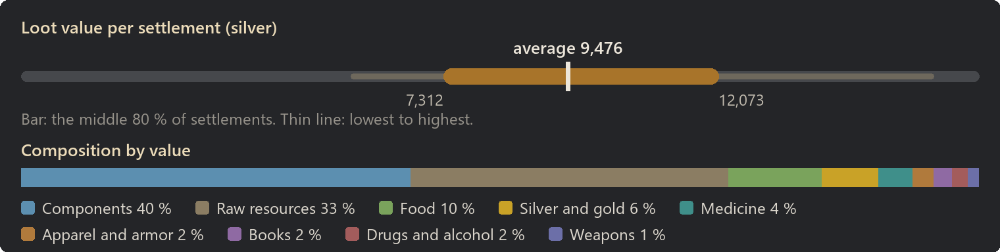
Components: 40 % of the value
| Item | Share of this class | Found in | Average amount |
|---|
| Powerfocus chip | 23 % | 34 % | 1 |
| Component | 21 % | 96 % | 26 |
| Nano structuring chip | 15 % | 23 % | 0 |
| Signal chip | 14 % | 42 % | 1 |
| Chemfuel | 9 % | 89 % | 144 |
| Advanced component | 8 % | 42 % | 2 |
| Basic subcore | 5 % | 38 % | 1 |
| Neutroamine | 4 % | 70 % | 29 |
Raw resources: 33 % of the value
| Item | Share of this class | Found in | Average amount |
|---|
| Wood | 35 % | almost always | 921 |
| Steel | 23 % | 96 % | 382 |
| Cloth | 5 % | 79 % | 104 |
| Plasteel | 4 % | 45 % | 12 |
| Plainleather | 3 % | 64 % | 49 |
| Sheep wool | 3 % | 66 % | 37 |
| Jade | 3 % | 54 % | 18 |
| Muffalo wool | 3 % | 54 % | 30 |
Food: 10 % of the value
| Item | Share of this class | Found in | Average amount |
|---|
| Berries | 12 % | 92 % | 93 |
| Potatoes | 10 % | 80 % | 84 |
| Pemmican | 10 % | 96 % | 63 |
| Rice | 10 % | 74 % | 80 |
| Kibble | 9 % | 77 % | 74 |
| Chicken egg (unfert.) | 8 % | 60 % | 11 |
| Corn | 7 % | 70 % | 57 |
| Milk | 6 % | 66 % | 27 |
Silver and gold: 6 % of the value
| Item | Share of this class | Found in | Average amount |
|---|
| Silver | 54 % | 96 % | 302 |
| Gold | 46 % | 66 % | 26 |
Medicine: 4 % of the value
| Item | Share of this class | Found in | Average amount |
|---|
| Medicine | 55 % | 68 % | 10 |
| Herbal medicine | 36 % | 62 % | 12 |
| Glitterworld medicine | 9 % | 17 % | 1 |
Apparel and armor: 2 % of the value
| Item | Share of this class | Found in | Average amount |
|---|
| Pants | 16 % | 46 % | 1 |
| Recon armor | 15 % | 4 % | 0 |
| Duster | 10 % | 20 % | 0 |
| T-shirt | 10 % | 38 % | 1 |
| Jacket | 9 % | 22 % | 0 |
| Parka | 6 % | 18 % | 0 |
| Flak vest | 6 % | 7 % | 0 |
| Flak jacket | 4 % | 6 % | 0 |
Books: 2 % of the value
| Item | Share of this class | Found in | Average amount |
|---|
| Textbook | 28 % | 17 % | 0 |
| Map | 24 % | 12 % | 0 |
| Novel | 21 % | 13 % | 0 |
| Schematic | 20 % | 14 % | 0 |
| Tome | 6 % | 4 % | 0 |
Drugs and alcohol: 2 % of the value
| Item | Share of this class | Found in | Average amount |
|---|
| Penoxycyline | 40 % | 40 % | 4 |
| Metalblood serum | 29 % | 10 % | 0 |
| Beer | 15 % | 19 % | 2 |
| Mind-numb serum | 9 % | 10 % | 0 |
| Ghoul resurrection serum | 2 % | 5 % | 0 |
| Wake-up | 1 % | 2 % | 0 |
| Ambrosia | 1 % | 4 % | 0 |
| Go-juice | 1 % | under 1 % | 0 |
Weapons: 1 % of the value
| Item | Share of this class | Found in | Average amount |
|---|
| 81mm mortar shell (HE) | 36 % | 8 % | 1 |
| 81mm mortar shell (Incendiary) | 17 % | 6 % | 0 |
| Spear | 10 % | 6 % | 0 |
| Longsword | 7 % | 6 % | 0 |
| Club | 5 % | 7 % | 0 |
| Autopistol | 5 % | 5 % | 0 |
| Revolver | 5 % | 8 % | 0 |
| Knife | 4 % | 6 % | 0 |
| Most valuable possible find |
Value |
Chance per settlement |
| Recon armor |
1,542 |
4 % |
| Nano structuring chip |
1,500 |
23 % |
| Powerfocus chip |
1,000 |
34 % |
| Reinforced barrel |
600 |
2 % |
| Psychic soothe pulser |
600 |
1 % |
Mining site
- Tech level: Industrial, Spacer, Ultra
- Expected loot value: 9,807 silver on average, usually 7,323 to 12,567
- Containers: about 22, worth 438 silver each on average
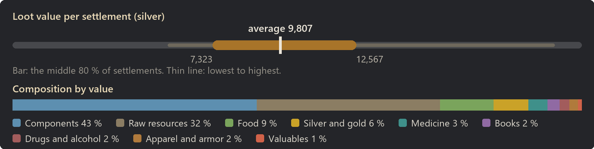
Components: 43 % of the value
| Item | Share of this class | Found in | Average amount |
|---|
| Component | 23 % | 96 % | 30 |
| Powerfocus chip | 20 % | 34 % | 1 |
| Nano structuring chip | 15 % | 26 % | 0 |
| Signal chip | 13 % | 42 % | 1 |
| Advanced component | 10 % | 52 % | 2 |
| Chemfuel | 9 % | 91 % | 167 |
| Basic subcore | 6 % | 49 % | 1 |
| Neutroamine | 5 % | 78 % | 33 |
Raw resources: 32 % of the value
| Item | Share of this class | Found in | Average amount |
|---|
| Wood | 36 % | almost always | 938 |
| Steel | 23 % | 98 % | 383 |
| Cloth | 5 % | 75 % | 108 |
| Jade | 4 % | 69 % | 23 |
| Plasteel | 4 % | 44 % | 13 |
| Plainleather | 3 % | 61 % | 51 |
| Sheep wool | 3 % | 60 % | 36 |
| Alpaca wool | 2 % | 42 % | 18 |
Food: 9 % of the value
| Item | Share of this class | Found in | Average amount |
|---|
| Berries | 11 % | 90 % | 87 |
| Pemmican | 10 % | 96 % | 67 |
| Potatoes | 10 % | 78 % | 81 |
| Rice | 10 % | 76 % | 81 |
| Kibble | 8 % | 72 % | 67 |
| Chicken egg (unfert.) | 8 % | 56 % | 10 |
| Corn | 7 % | 70 % | 63 |
| Milk | 5 % | 64 % | 26 |
Silver and gold: 6 % of the value
| Item | Share of this class | Found in | Average amount |
|---|
| Silver | 53 % | 96 % | 320 |
| Gold | 47 % | 65 % | 28 |
Medicine: 3 % of the value
| Item | Share of this class | Found in | Average amount |
|---|
| Medicine | 53 % | 66 % | 10 |
| Herbal medicine | 37 % | 60 % | 12 |
| Glitterworld medicine | 10 % | 20 % | 1 |
Books: 2 % of the value
| Item | Share of this class | Found in | Average amount |
|---|
| Textbook | 39 % | 26 % | 0 |
| Novel | 21 % | 16 % | 0 |
| Schematic | 18 % | 17 % | 0 |
| Tome | 11 % | 6 % | 0 |
| Map | 10 % | 8 % | 0 |
Drugs and alcohol: 2 % of the value
| Item | Share of this class | Found in | Average amount |
|---|
| Penoxycyline | 39 % | 40 % | 4 |
| Metalblood serum | 29 % | 10 % | 0 |
| Beer | 13 % | 16 % | 2 |
| Mind-numb serum | 11 % | 10 % | 0 |
| Wake-up | 2 % | 2 % | 0 |
| Ambrosia | 2 % | 5 % | 0 |
| Flake | 2 % | 3 % | 0 |
| Ghoul resurrection serum | 1 % | 4 % | 0 |
Apparel and armor: 2 % of the value
| Item | Share of this class | Found in | Average amount |
|---|
| T-shirt | 22 % | 43 % | 1 |
| Pants | 19 % | 46 % | 1 |
| Jacket | 17 % | 24 % | 0 |
| Duster | 16 % | 22 % | 0 |
| Parka | 9 % | 16 % | 0 |
| Corset | 6 % | 6 % | 0 |
| Robe | 5 % | 10 % | 0 |
| Cowboy hat | 4 % | 23 % | 0 |
| Most valuable possible find |
Value |
Chance per settlement |
| Persona core |
4,000 |
2 % |
| Nano structuring chip |
1,500 |
26 % |
| Powerfocus chip |
1,000 |
34 % |
| Signal chip |
500 |
42 % |
| Pendant |
500 |
under 1 % |
With World Domination
Without World Domination loot mixed in. With the slider Loot in World Domination settlements below 100 %, general containers get World Domination's loot budget instead, see Compatibility.
| Settlement |
Expected value |
Per container |
| Prison camp |
3,571 |
275 |
| Logging outpost |
5,108 |
254 |
| Field camp |
5,150 |
710 |
| Farm outpost |
5,686 |
264 |
| Mining outpost |
6,103 |
309 |
| Production town |
24,588 |
443 |
Prison camp
- Tech level: Industrial, Spacer, Ultra
- Expected loot value: 3,571 silver on average, usually 1,720 to 5,102
- Containers: about 13, worth 275 silver each on average
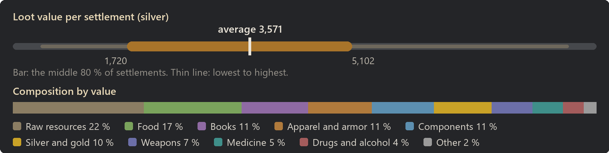
Raw resources: 22 % of the value
| Item | Share of this class | Found in | Average amount |
|---|
| Wood | 42 % | 90 % | 284 |
| Steel | 10 % | 36 % | 43 |
| Cloth | 9 % | 42 % | 48 |
| Plainleather | 6 % | 35 % | 25 |
| Sheep wool | 5 % | 30 % | 14 |
| Jade | 4 % | 27 % | 6 |
| Alpaca wool | 4 % | 20 % | 8 |
| Heavy fur | 3 % | 23 % | 8 |
Food: 17 % of the value
| Item | Share of this class | Found in | Average amount |
|---|
| Berries | 16 % | 86 % | 81 |
| Potatoes | 15 % | 78 % | 81 |
| Rice | 12 % | 64 % | 63 |
| Corn | 10 % | 63 % | 56 |
| Kibble | 6 % | 49 % | 35 |
| Pemmican | 6 % | 79 % | 26 |
| Chicken egg (unfert.) | 5 % | 26 % | 4 |
| Raw fungus | 4 % | 38 % | 21 |
Books: 11 % of the value
| Item | Share of this class | Found in | Average amount |
|---|
| Textbook | 30 % | 35 % | 1 |
| Novel | 24 % | 26 % | 1 |
| Schematic | 24 % | 30 % | 1 |
| Map | 13 % | 16 % | 0 |
| Tome | 9 % | 10 % | 0 |
Apparel and armor: 11 % of the value
| Item | Share of this class | Found in | Average amount |
|---|
| Duster | 16 % | 44 % | 1 |
| Jacket | 14 % | 45 % | 1 |
| T-shirt | 13 % | 59 % | 2 |
| Pants | 12 % | 62 % | 2 |
| Recon armor | 11 % | 3 % | 0 |
| Parka | 6 % | 28 % | 0 |
| Robe | 5 % | 23 % | 0 |
| Corset | 4 % | 12 % | 0 |
Components: 11 % of the value
| Item | Share of this class | Found in | Average amount |
|---|
| Powerfocus chip | 33 % | 6 % | 0 |
| Nano structuring chip | 28 % | 6 % | 0 |
| Component | 17 % | 19 % | 2 |
| Signal chip | 7 % | 4 % | 0 |
| Advanced component | 6 % | 4 % | 0 |
| Chemfuel | 4 % | 8 % | 6 |
| Wort | 3 % | 25 % | 5 |
| Neutroamine | 2 % | 6 % | 1 |
Silver and gold: 10 % of the value
| Item | Share of this class | Found in | Average amount |
|---|
| Silver | 61 % | 80 % | 218 |
| Gold | 39 % | 42 % | 14 |
Weapons: 7 % of the value
| Item | Share of this class | Found in | Average amount |
|---|
| 81mm mortar shell (HE) | 30 % | 14 % | 1 |
| 81mm mortar shell (Incendiary) | 15 % | 12 % | 1 |
| Bolt-action rifle | 8 % | 12 % | 0 |
| Assault rifle | 6 % | 8 % | 0 |
| Pump shotgun | 5 % | 8 % | 0 |
| Revolver | 5 % | 18 % | 0 |
| LMG | 4 % | 4 % | 0 |
| Charge rifle | 4 % | 2 % | 0 |
Medicine: 5 % of the value
| Item | Share of this class | Found in | Average amount |
|---|
| Medicine | 53 % | 44 % | 5 |
| Herbal medicine | 37 % | 40 % | 7 |
| Glitterworld medicine | 10 % | 12 % | 0 |
Drugs and alcohol: 4 % of the value
| Item | Share of this class | Found in | Average amount |
|---|
| Beer | 37 % | 34 % | 4 |
| Penoxycyline | 33 % | 27 % | 2 |
| Metalblood serum | 12 % | 4 % | 0 |
| Mind-numb serum | 9 % | 7 % | 0 |
| Ambrosia | 3 % | 7 % | 0 |
| Ghoul resurrection serum | 2 % | 4 % | 0 |
| Yayo | 1 % | 2 % | 0 |
| Smokeleaf joint | 1 % | 2 % | 0 |
Other: 2 % of the value
| Item | Share of this class | Found in | Average amount |
|---|
| Reinforced barrel | 87 % | 5 % | 0 |
| Pendant | 7 % | 1 % | 0 |
| Chalice | 3 % | under 1 % | 0 |
| Genepack | 3 % | 1 % | 0 |
| Most valuable possible find |
Value |
Chance per settlement |
| Marine armor |
2,036 |
1 % |
| Recon armor |
1,542 |
3 % |
| Nano structuring chip |
1,500 |
6 % |
| Charge rifle |
1,012 |
2 % |
| Powerfocus chip |
1,000 |
6 % |
Logging outpost
- Tech level: Industrial, Spacer, Ultra
- Expected loot value: 5,108 silver on average, usually 3,586 to 6,801
- Containers: about 20, worth 254 silver each on average
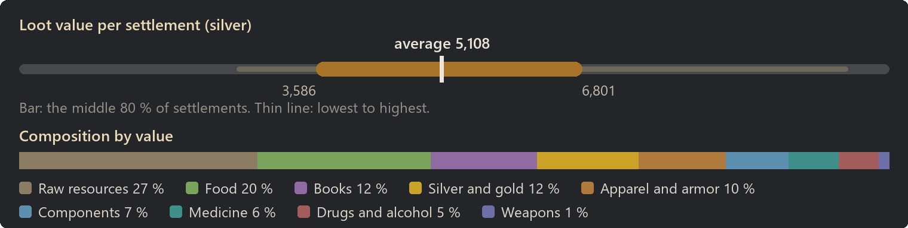
Raw resources: 27 % of the value
| Item | Share of this class | Found in | Average amount |
|---|
| Wood | 48 % | 99 % | 554 |
| Cloth | 9 % | 70 % | 87 |
| Plainleather | 6 % | 57 % | 41 |
| Sheep wool | 5 % | 48 % | 24 |
| Steel | 5 % | 26 % | 34 |
| Jade | 4 % | 38 % | 11 |
| Muffalo wool | 4 % | 38 % | 20 |
| Alpaca wool | 4 % | 34 % | 13 |
Food: 20 % of the value
| Item | Share of this class | Found in | Average amount |
|---|
| Berries | 17 % | 98 % | 147 |
| Potatoes | 15 % | 92 % | 143 |
| Rice | 12 % | 89 % | 114 |
| Corn | 10 % | 85 % | 97 |
| Kibble | 6 % | 68 % | 53 |
| Pemmican | 5 % | 93 % | 37 |
| Chicken egg (unfert.) | 4 % | 35 % | 6 |
| Simple meal | 4 % | 92 % | 3 |
Books: 12 % of the value
| Item | Share of this class | Found in | Average amount |
|---|
| Textbook | 32 % | 52 % | 1 |
| Schematic | 24 % | 50 % | 1 |
| Novel | 21 % | 42 % | 1 |
| Map | 15 % | 27 % | 1 |
| Tome | 8 % | 14 % | 0 |
Silver and gold: 12 % of the value
| Item | Share of this class | Found in | Average amount |
|---|
| Silver | 62 % | 94 % | 370 |
| Gold | 38 % | 62 % | 23 |
Apparel and armor: 10 % of the value
| Item | Share of this class | Found in | Average amount |
|---|
| Jacket | 20 % | 66 % | 2 |
| Pants | 19 % | 84 % | 3 |
| Duster | 19 % | 62 % | 1 |
| T-shirt | 17 % | 81 % | 3 |
| Parka | 7 % | 43 % | 1 |
| Robe | 6 % | 40 % | 0 |
| Corset | 5 % | 18 % | 0 |
| Cowboy hat | 3 % | 46 % | 1 |
Components: 7 % of the value
| Item | Share of this class | Found in | Average amount |
|---|
| Component | 22 % | 22 % | 2 |
| Powerfocus chip | 16 % | 4 % | 0 |
| Nano structuring chip | 14 % | 2 % | 0 |
| Signal chip | 11 % | 4 % | 0 |
| Chemfuel | 10 % | 20 % | 15 |
| Advanced component | 9 % | 5 % | 0 |
| Wort | 7 % | 48 % | 11 |
| Basic subcore | 6 % | 4 % | 0 |
Medicine: 6 % of the value
| Item | Share of this class | Found in | Average amount |
|---|
| Medicine | 56 % | 67 % | 9 |
| Herbal medicine | 34 % | 56 % | 10 |
| Glitterworld medicine | 11 % | 21 % | 1 |
Drugs and alcohol: 5 % of the value
| Item | Share of this class | Found in | Average amount |
|---|
| Beer | 44 % | 64 % | 9 |
| Penoxycyline | 27 % | 40 % | 4 |
| Metalblood serum | 17 % | 10 % | 0 |
| Mind-numb serum | 6 % | 10 % | 0 |
| Ambrosia | 4 % | 16 % | 1 |
| Ghoul resurrection serum | 1 % | 5 % | 0 |
Weapons: 1 % of the value
| Item | Share of this class | Found in | Average amount |
|---|
| Revolver | 36 % | 32 % | 0 |
| Autopistol | 32 % | 24 % | 0 |
| Machine pistol | 23 % | 12 % | 0 |
| Heavy SMG | 10 % | 4 % | 0 |
| Most valuable possible find |
Value |
Chance per settlement |
| Nano structuring chip |
1,500 |
2 % |
| Powerfocus chip |
1,000 |
4 % |
| Signal chip |
500 |
4 % |
| Tome |
250 |
14 % |
| Advanced component |
200 |
5 % |
Field camp
- Tech level: Industrial, Spacer, Ultra
- Expected loot value: 5,150 silver on average, usually 2,790 to 7,356
- Containers: about 7, worth 710 silver each on average
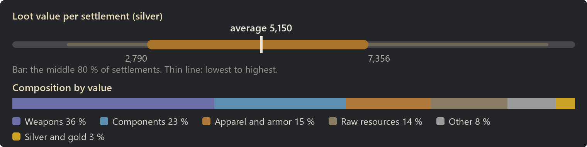
Weapons: 36 % of the value
| Item | Share of this class | Found in | Average amount |
|---|
| 81mm mortar shell (HE) | 34 % | 72 % | 11 |
| 81mm mortar shell (Incendiary) | 14 % | 56 % | 6 |
| Bolt-action rifle | 9 % | 63 % | 2 |
| Pump shotgun | 8 % | 57 % | 1 |
| Assault rifle | 8 % | 48 % | 1 |
| Sniper rifle | 5 % | 30 % | 0 |
| Chain shotgun | 3 % | 27 % | 0 |
| Charge rifle | 3 % | 9 % | 0 |
Components: 23 % of the value
| Item | Share of this class | Found in | Average amount |
|---|
| Component | 26 % | 64 % | 10 |
| Powerfocus chip | 23 % | 12 % | 0 |
| Nano structuring chip | 21 % | 10 % | 0 |
| Signal chip | 15 % | 16 % | 0 |
| Advanced component | 8 % | 16 % | 0 |
| Basic subcore | 8 % | 22 % | 0 |
Apparel and armor: 15 % of the value
| Item | Share of this class | Found in | Average amount |
|---|
| Flak vest | 19 % | 66 % | 2 |
| Recon armor | 19 % | 18 % | 0 |
| Flak pants | 16 % | 50 % | 1 |
| Recon helmet | 10 % | 20 % | 0 |
| Simple helmet | 10 % | 66 % | 2 |
| Flak jacket | 9 % | 44 % | 1 |
| Flak helmet | 7 % | 36 % | 0 |
| Marine armor | 5 % | 5 % | 0 |
Raw resources: 14 % of the value
| Item | Share of this class | Found in | Average amount |
|---|
| Steel | 62 % | 90 % | 225 |
| Plasteel | 6 % | 20 % | 5 |
| Jade | 5 % | 24 % | 7 |
| Cloth | 5 % | 24 % | 21 |
| Plainleather | 4 % | 22 % | 13 |
| Muffalo wool | 3 % | 18 % | 7 |
| Sheep wool | 2 % | 15 % | 6 |
| Lightleather | 2 % | 20 % | 9 |
Other: 8 % of the value
| Item | Share of this class | Found in | Average amount |
|---|
| Reinforced barrel | 99 % | 30 % | 1 |
| Pendant | 1 % | under 1 % | 0 |
| Chalice | 1 % | under 1 % | 0 |
| Genepack | 0 % | under 1 % | 0 |
Silver and gold: 3 % of the value
| Item | Share of this class | Found in | Average amount |
|---|
| Gold | 53 % | 28 % | 9 |
| Silver | 47 % | 56 % | 81 |
| Most valuable possible find |
Value |
Chance per settlement |
| Marine armor |
2,036 |
5 % |
| Recon armor |
1,542 |
18 % |
| Nano structuring chip |
1,500 |
10 % |
| Charge rifle |
1,012 |
9 % |
| Powerfocus chip |
1,000 |
12 % |
Farm outpost
- Tech level: Industrial, Spacer, Ultra
- Expected loot value: 5,686 silver on average, usually 4,165 to 7,246
- Containers: about 22, worth 264 silver each on average
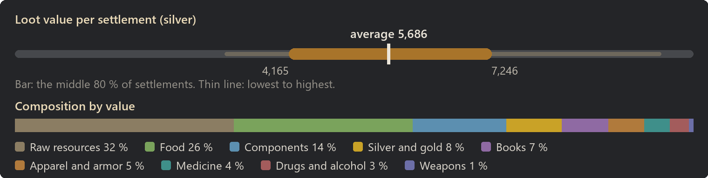
Raw resources: 32 % of the value
| Item | Share of this class | Found in | Average amount |
|---|
| Wood | 49 % | almost always | 751 |
| Cloth | 8 % | 74 % | 92 |
| Steel | 7 % | 46 % | 69 |
| Plainleather | 5 % | 60 % | 47 |
| Sheep wool | 4 % | 48 % | 25 |
| Lightleather | 4 % | 60 % | 33 |
| Muffalo wool | 3 % | 44 % | 23 |
| Heavy fur | 3 % | 38 % | 17 |
Food: 26 % of the value
| Item | Share of this class | Found in | Average amount |
|---|
| Berries | 16 % | almost always | 201 |
| Potatoes | 12 % | 94 % | 157 |
| Rice | 11 % | 93 % | 155 |
| Corn | 10 % | 94 % | 133 |
| Chicken egg (unfert.) | 8 % | 80 % | 18 |
| Kibble | 8 % | 84 % | 104 |
| Milk | 7 % | 87 % | 53 |
| Pemmican | 6 % | 98 % | 61 |
Components: 14 % of the value
| Item | Share of this class | Found in | Average amount |
|---|
| Component | 22 % | 47 % | 6 |
| Powerfocus chip | 20 % | 8 % | 0 |
| Nano structuring chip | 16 % | 6 % | 0 |
| Signal chip | 13 % | 10 % | 0 |
| Chemfuel | 10 % | 40 % | 33 |
| Advanced component | 6 % | 10 % | 0 |
| Neutroamine | 6 % | 26 % | 8 |
| Basic subcore | 4 % | 8 % | 0 |
Silver and gold: 8 % of the value
| Item | Share of this class | Found in | Average amount |
|---|
| Silver | 62 % | 89 % | 288 |
| Gold | 38 % | 50 % | 18 |
Books: 7 % of the value
| Item | Share of this class | Found in | Average amount |
|---|
| Textbook | 33 % | 38 % | 1 |
| Schematic | 24 % | 36 % | 1 |
| Novel | 18 % | 25 % | 0 |
| Map | 17 % | 18 % | 0 |
| Tome | 8 % | 9 % | 0 |
Apparel and armor: 5 % of the value
| Item | Share of this class | Found in | Average amount |
|---|
| Jacket | 21 % | 47 % | 1 |
| T-shirt | 19 % | 70 % | 2 |
| Pants | 18 % | 70 % | 2 |
| Duster | 17 % | 42 % | 1 |
| Parka | 7 % | 25 % | 0 |
| Robe | 6 % | 26 % | 0 |
| Corset | 5 % | 10 % | 0 |
| Cowboy hat | 4 % | 31 % | 1 |
Medicine: 4 % of the value
| Item | Share of this class | Found in | Average amount |
|---|
| Medicine | 50 % | 48 % | 6 |
| Herbal medicine | 37 % | 46 % | 8 |
| Glitterworld medicine | 13 % | 16 % | 1 |
Drugs and alcohol: 3 % of the value
| Item | Share of this class | Found in | Average amount |
|---|
| Beer | 44 % | 46 % | 6 |
| Penoxycyline | 28 % | 32 % | 3 |
| Metalblood serum | 17 % | 6 % | 0 |
| Mind-numb serum | 6 % | 6 % | 0 |
| Ambrosia | 3 % | 8 % | 0 |
| Ghoul resurrection serum | 2 % | 4 % | 0 |
| Most valuable possible find |
Value |
Chance per settlement |
| Nano structuring chip |
1,500 |
6 % |
| Powerfocus chip |
1,000 |
8 % |
| Signal chip |
500 |
10 % |
| Tome |
250 |
9 % |
| Advanced component |
200 |
10 % |
Mining outpost
- Tech level: Industrial, Spacer, Ultra
- Expected loot value: 6,103 silver on average, usually 2,857 to 11,069
- Containers: about 20, worth 309 silver each on average
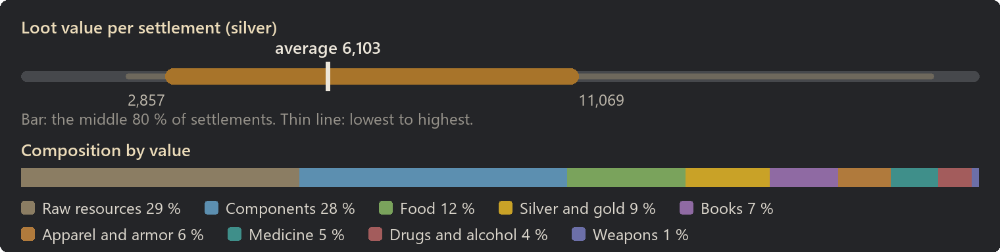
Raw resources: 29 % of the value
| Item | Share of this class | Found in | Average amount |
|---|
| Wood | 37 % | almost always | 550 |
| Steel | 16 % | 52 % | 153 |
| Cloth | 8 % | 66 % | 92 |
| Plainleather | 5 % | 52 % | 40 |
| Sheep wool | 4 % | 50 % | 27 |
| Muffalo wool | 3 % | 42 % | 22 |
| Jade | 3 % | 39 % | 12 |
| Alpaca wool | 3 % | 32 % | 12 |
Components: 28 % of the value
| Item | Share of this class | Found in | Average amount |
|---|
| Component | 21 % | 54 % | 11 |
| Nano structuring chip | 19 % | 13 % | 0 |
| Chemfuel | 14 % | 79 % | 102 |
| Powerfocus chip | 14 % | 9 % | 0 |
| Signal chip | 14 % | 19 % | 0 |
| Advanced component | 7 % | 16 % | 1 |
| Neutroamine | 6 % | 50 % | 18 |
| Basic subcore | 5 % | 14 % | 0 |
Food: 12 % of the value
| Item | Share of this class | Found in | Average amount |
|---|
| Berries | 14 % | 93 % | 89 |
| Potatoes | 12 % | 78 % | 82 |
| Rice | 12 % | 74 % | 81 |
| Pemmican | 9 % | 91 % | 49 |
| Corn | 9 % | 66 % | 60 |
| Kibble | 7 % | 64 % | 49 |
| Simple meal | 4 % | 86 % | 2 |
| Milk | 4 % | 40 % | 15 |
Silver and gold: 9 % of the value
| Item | Share of this class | Found in | Average amount |
|---|
| Silver | 60 % | 90 % | 319 |
| Gold | 40 % | 55 % | 21 |
Books: 7 % of the value
| Item | Share of this class | Found in | Average amount |
|---|
| Textbook | 31 % | 34 % | 1 |
| Schematic | 25 % | 36 % | 1 |
| Novel | 21 % | 26 % | 1 |
| Map | 14 % | 15 % | 0 |
| Tome | 10 % | 12 % | 0 |
Apparel and armor: 6 % of the value
| Item | Share of this class | Found in | Average amount |
|---|
| Duster | 21 % | 46 % | 1 |
| Pants | 20 % | 74 % | 2 |
| Jacket | 18 % | 51 % | 1 |
| T-shirt | 16 % | 70 % | 2 |
| Parka | 7 % | 28 % | 0 |
| Corset | 6 % | 12 % | 0 |
| Robe | 5 % | 22 % | 0 |
| Cowboy hat | 4 % | 38 % | 1 |
Medicine: 5 % of the value
| Item | Share of this class | Found in | Average amount |
|---|
| Medicine | 52 % | 59 % | 9 |
| Herbal medicine | 41 % | 62 % | 12 |
| Glitterworld medicine | 8 % | 14 % | 0 |
Drugs and alcohol: 4 % of the value
| Item | Share of this class | Found in | Average amount |
|---|
| Penoxycyline | 32 % | 38 % | 4 |
| Beer | 28 % | 41 % | 5 |
| Metalblood serum | 20 % | 10 % | 0 |
| Mind-numb serum | 10 % | 14 % | 0 |
| Flake | 2 % | 6 % | 0 |
| Ambrosia | 2 % | 6 % | 0 |
| Yayo | 1 % | 2 % | 0 |
| Ghoul resurrection serum | 1 % | 3 % | 0 |
| Most valuable possible find |
Value |
Chance per settlement |
| Nano structuring chip |
1,500 |
13 % |
| Powerfocus chip |
1,000 |
9 % |
| Psychic animal pulser |
700 |
under 1 % |
| Psychic soothe pulser |
600 |
1 % |
| Signal chip |
500 |
19 % |
Production town
- Tech level: Industrial, Spacer, Ultra
- Expected loot value: 24,588 silver on average, usually 19,307 to 30,237
- Containers: about 56, worth 443 silver each on average
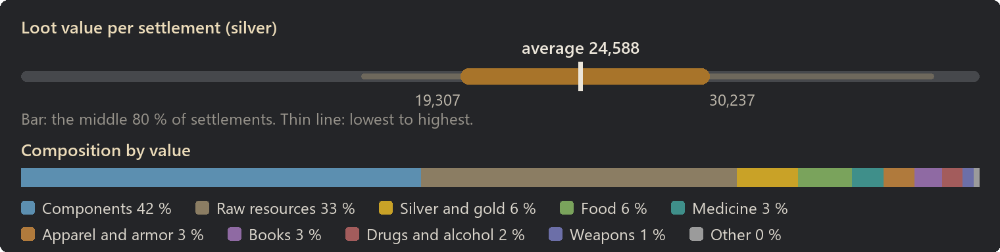
Components: 42 % of the value
| Item | Share of this class | Found in | Average amount |
|---|
| Component | 23 % | almost always | 73 |
| Powerfocus chip | 19 % | 60 % | 2 |
| Nano structuring chip | 15 % | 51 % | 1 |
| Signal chip | 15 % | 80 % | 3 |
| Chemfuel | 9 % | almost always | 418 |
| Advanced component | 8 % | 74 % | 4 |
| Basic subcore | 6 % | 78 % | 3 |
| Neutroamine | 5 % | 98 % | 84 |
Raw resources: 33 % of the value
| Item | Share of this class | Found in | Average amount |
|---|
| Wood | 34 % | almost always | 2,318 |
| Steel | 24 % | almost always | 1,036 |
| Cloth | 5 % | 96 % | 277 |
| Jade | 4 % | 92 % | 61 |
| Plainleather | 4 % | 94 % | 137 |
| Plasteel | 3 % | 74 % | 27 |
| Sheep wool | 3 % | 86 % | 85 |
| Muffalo wool | 2 % | 88 % | 70 |
Silver and gold: 6 % of the value
| Item | Share of this class | Found in | Average amount |
|---|
| Silver | 51 % | almost always | 812 |
| Gold | 49 % | 93 % | 77 |
Food: 6 % of the value
| Item | Share of this class | Found in | Average amount |
|---|
| Berries | 13 % | 98 % | 145 |
| Potatoes | 10 % | 88 % | 128 |
| Pemmican | 10 % | 98 % | 98 |
| Rice | 10 % | 84 % | 123 |
| Corn | 8 % | 84 % | 101 |
| Kibble | 8 % | 76 % | 99 |
| Simple meal | 5 % | 98 % | 5 |
| Chicken egg (unfert.) | 5 % | 48 % | 10 |
Medicine: 3 % of the value
| Item | Share of this class | Found in | Average amount |
|---|
| Medicine | 53 % | 96 % | 24 |
| Herbal medicine | 36 % | 92 % | 30 |
| Glitterworld medicine | 10 % | 44 % | 2 |
Apparel and armor: 3 % of the value
| Item | Share of this class | Found in | Average amount |
|---|
| Pants | 16 % | 85 % | 4 |
| T-shirt | 16 % | 89 % | 4 |
| Duster | 14 % | 62 % | 2 |
| Jacket | 14 % | 74 % | 2 |
| Robe | 6 % | 50 % | 1 |
| Parka | 5 % | 49 % | 1 |
| Corset | 4 % | 20 % | 0 |
| Flak vest | 4 % | 22 % | 0 |
Books: 3 % of the value
| Item | Share of this class | Found in | Average amount |
|---|
| Textbook | 38 % | 56 % | 2 |
| Schematic | 22 % | 46 % | 1 |
| Novel | 19 % | 42 % | 1 |
| Map | 13 % | 26 % | 1 |
| Tome | 8 % | 14 % | 0 |
Drugs and alcohol: 2 % of the value
| Item | Share of this class | Found in | Average amount |
|---|
| Penoxycyline | 38 % | 70 % | 11 |
| Metalblood serum | 21 % | 22 % | 1 |
| Beer | 16 % | 54 % | 7 |
| Mind-numb serum | 10 % | 28 % | 1 |
| Wake-up | 3 % | 10 % | 0 |
| Flake | 2 % | 14 % | 1 |
| Yayo | 2 % | 10 % | 0 |
| Go-juice | 2 % | 8 % | 0 |
Weapons: 1 % of the value
| Item | Share of this class | Found in | Average amount |
|---|
| 81mm mortar shell (HE) | 33 % | 20 % | 2 |
| 81mm mortar shell (Incendiary) | 18 % | 17 % | 1 |
| Spear | 10 % | 21 % | 0 |
| Knife | 7 % | 32 % | 1 |
| Longsword | 5 % | 12 % | 0 |
| Revolver | 4 % | 20 % | 0 |
| Machine pistol | 4 % | 12 % | 0 |
| Club | 3 % | 17 % | 0 |
| Most valuable possible find |
Value |
Chance per settlement |
| Persona core |
4,000 |
under 1 % |
| Marine armor |
2,036 |
2 % |
| Recon armor |
1,542 |
2 % |
| Nano structuring chip |
1,500 |
51 % |
| Powerfocus chip |
1,000 |
60 % |
Simulated on 2026-10-08.